A small dining room can look cramped in about five minutes. Put in a table that feels too big, add bulky chairs, throw in a cabinet because you "need storage," and suddenly you can barely pull a chair out. The good news? These 18 small dining room ideas can help you create a space that feels comfortable, stylish, and genuinely useful without knocking down a wall.
I've always thought small dining spaces reward thoughtful decorating more than big ones. You have to make every piece earn its place, but that constraint can actually create a more intentional room. And honestly, who needs a dining room the size of a hotel ballroom just to eat pasta?
Compact dining areas can still accommodate gathering, working, and everyday activities just fine, as long as the furniture and layout get chosen carefully.

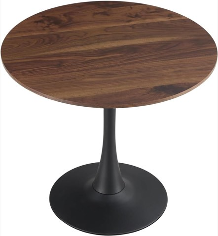
23.4" Round Tulip Dining Table for 2-4 People with Walnut Top and Black Metal Pedestal Base, Mid-Century Modern Small Space Table for Kitchen, Living Room, Cafe
Shop on Amazon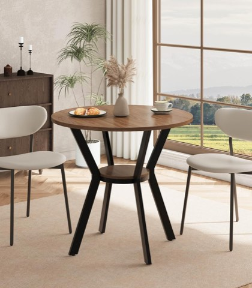
MECHYIN 31.5" Round Dining Table for 2-4, Small Kitchen Table with Storage
Shop on Amazon18 Small Dining Room Ideas
1. Small Dining Room Ideas That Actually Make a Difference
After looking at all 18 ideas, the biggest lesson comes down to scale and function.
You don't need to make everything tiny. You need to choose pieces that fit the room and support the way you actually live.
If I were decorating a small dining room from scratch, I'd start with these essentials:
- Round or oval table for easier circulation
- Bench or banquette where a wall allows it
- Slim or open-back chairs to reduce visual weight
- Pendant or chandelier instead of a floor lamp
- Mirror to reflect light and add depth
- Simple color palette for visual continuity
- Vertical storage instead of bulky furniture
- One strong focal point instead of lots of small decorations
The goal isn't to trick everyone into thinking your dining room measures 500 square feet. The goal is to make the space comfortable, functional, and visually calm.
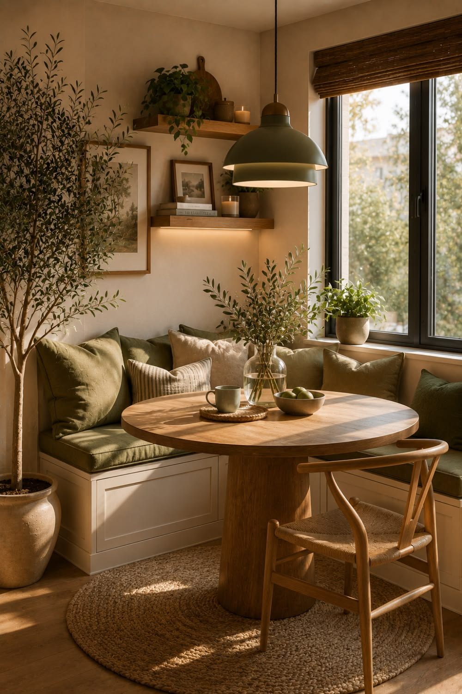

27.3" Round Tulip Dining Table for 2-4 People with Walnut Top and Black Metal Pedestal Base, Mid-Century Modern Small Space Table for Kitchen, Living Room, Cafe
Shop on Amazon2. Keep the Small Dining Room Visually Uncluttered
This idea sounds obvious, but it matters more than almost anything else.
Don't fill every available surface simply because you have one. Keep your centerpiece low enough to maintain conversation. Choose a few decorative objects that actually contribute to the room.
And give yourself permission to remove things. A small dining room doesn't need to display every beautiful object you own. Edit the room until the furniture, lighting, storage, and decoration all have a clear purpose.
The broader shift in dining room design lately points toward more personalized, functional spaces rather than overly formal rooms that just sit unused most of the year.
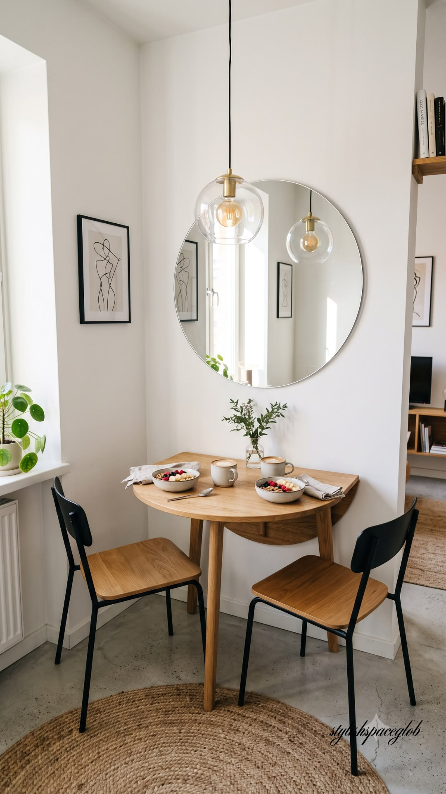
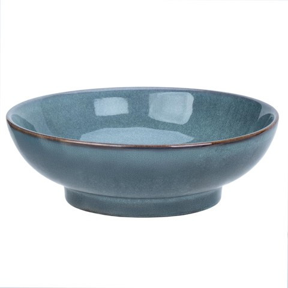
10" Decorative Bowl,Ceramic Fruit Bowl for Kitchen Counter,Coffee Table, Dining Room,Table Centerpiece Bowel,Entryway Key Holder & Jewelry Organizer (Ocean Blue)
Shop on Amazon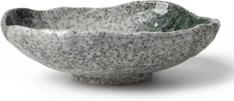
DOWAN 9.5" Wabi-Sabi Decorative Bowl, Irregular Moss Green Glazed Ceramic Catchall Bowl for Keys and Wallet, Stone Texture Centerpiece Table Bowl for Entryway, Living Room & Coffee Table Decor
Shop on Amazon3. Use a Rug to Define the Small Dining Area
A rug can visually anchor the table and chairs, especially if your dining area shares space with the living room.
Choose a rug large enough to accommodate the chairs even when you pull them away from the table.
For an open-plan home, the rug also tells the eye where the dining area begins and ends. Open-plan spaces increasingly get defined through distinct zones like this rather than relying entirely on walls to separate them.
Just choose a practical material. Dining rooms and delicate white rugs rarely make peaceful roommates.

4. Create a Dining Room Focal Point
Small doesn't mean boring.
In fact, one strong focal point can make a small dining room feel much more designed.
Hang oversized artwork above the table, install a dramatic wallpaper, or use a sculptural pendant.
Creating one real focal point in a smaller dining space tends to work well, often by combining artwork with thoughtful table styling and lighting.
I'd rather see one beautiful piece than ten tiny decorations competing for attention.
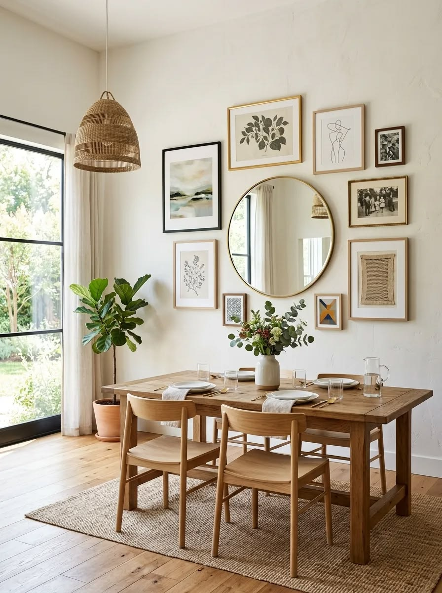
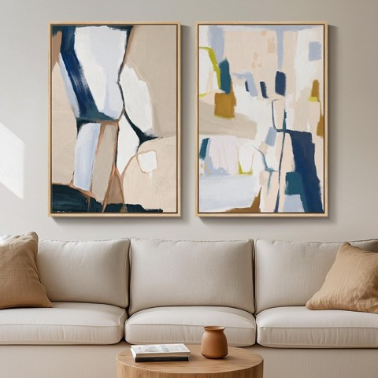
Large Framed Modern Colorful Abstract Wall Art for Living Room, 24x36 In
Shop on Amazon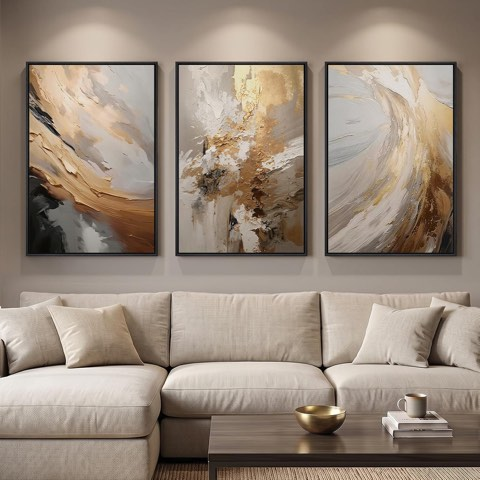
Large Framed Neutral Abstract Wall Art for Living Room, 3 Piece Set, 24x36
Shop on Amazon5. Use a Slim Console in Your Small Dining Room
If you need a surface for serving dishes, skip the oversized buffet.
A slim console table can provide almost the same functionality with a much smaller footprint.
Choose one with drawers if you need hidden storage. You can also style the top with a lamp, artwork, or a small arrangement of branches.
Slim consoles specifically tend to get recommended as useful alternatives to bulky dining-room furniture in compact spaces.
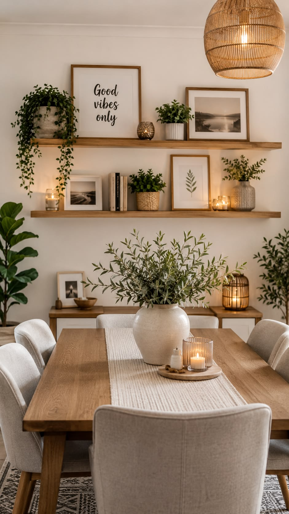
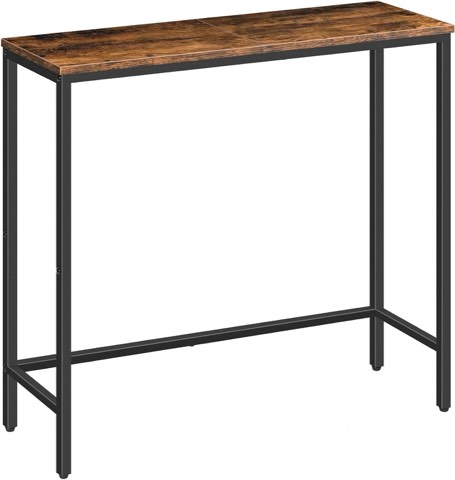
HOOBRO Narrow Console Table, 29.5" Small Entryway Table, Thin Sofa Side Display Table, for Hallway, Bedroom, Living Room, Foyer, Rustic Brown and Black BF75XG01
Shop on Amazon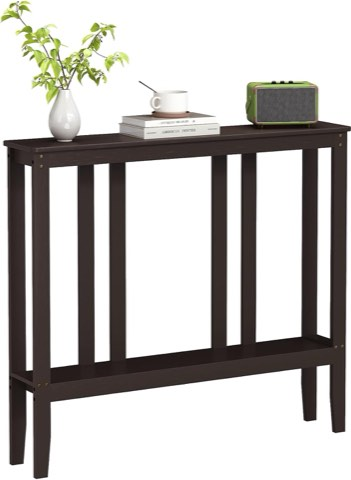
ELYKEN Bamboo 2-Tier Narrow Console Table, 36.2" Long Slim Hallway Table
Shop on Amazon6. Put Shelves Above Your Dining Table
A couple of carefully styled shelves can add personality without consuming valuable floor area.
Use them for:
- Ceramic bowls
- Small artwork
- Candlesticks
- Cookbooks
- Plants
- Decorative plates
Just avoid filling every inch.
A small dining room already has limited visual breathing room, so leave some empty space between objects.
That negative space can make your styling look intentional rather than like you emptied the entire kitchen cabinet onto the wall.
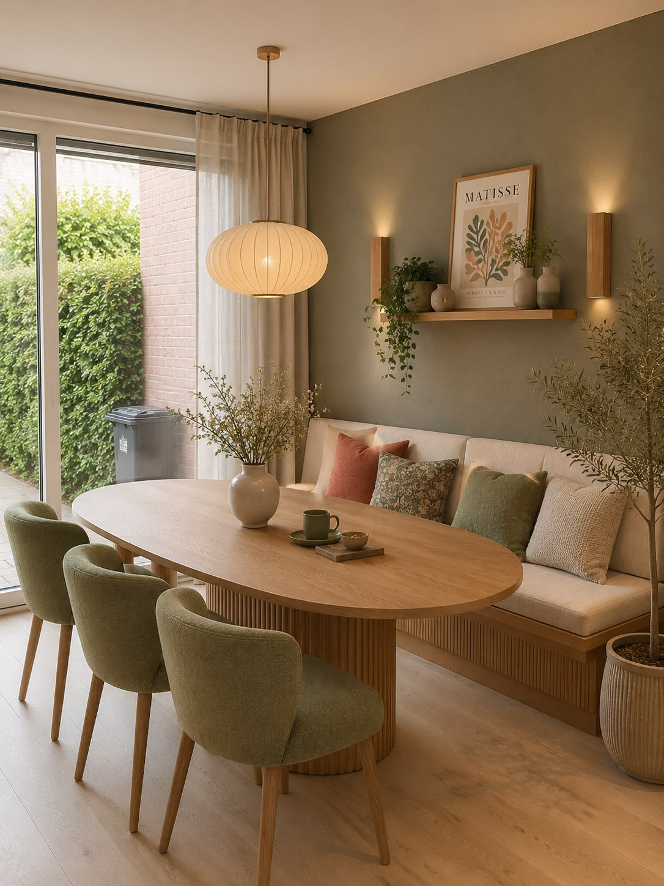
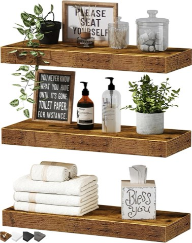
QEEIG Floating Shelves for Wall Small Shelf (Brown, Set of 3, 15.7" x 6.7")
Shop on Amazon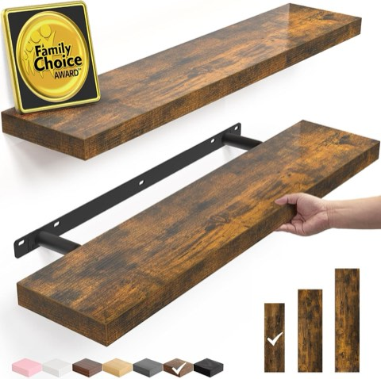
BAYKA Rustic Brown Floating Shelves 22.5in, Set of 2, Wall Mount Wood Shelf
Shop on Amazon7. Add Vertical Storage Instead of a Bulky Sideboard
Storage creates a common problem in small dining rooms.
You need somewhere for serving dishes, napkins, glassware, and table linens, but a large sideboard can swallow half the room.
Go upward instead. Install narrow shelves, a plate rack, or a slim wall cabinet. Keep frequently used items within easy reach and reserve lower cabinets for less attractive necessities.
Vertical storage gives you storage capacity without demanding much floor space.
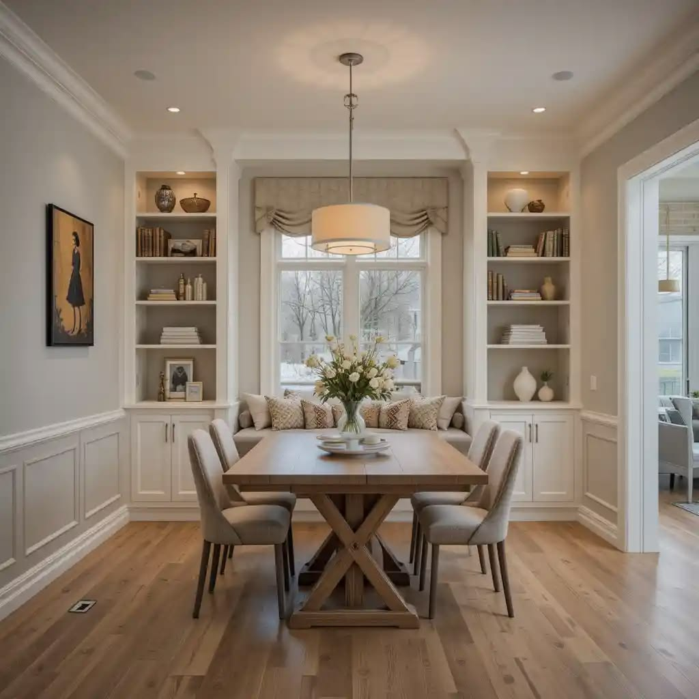
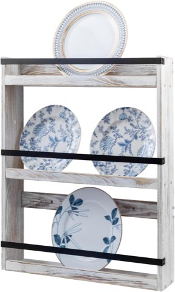
MyGift Wall Plate Display Rack, 3 Tier Farmhouse Whitewashed Wood Wall Mounted Plate Storage Rack, Holds 6-10inch Plates
Shop on Amazon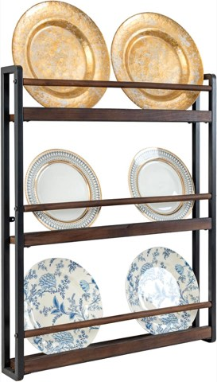
MyGift 3-Tier Wall Mounted Plate Display Rack – Industrial Matte Black Metal & Dark Burnt Wood Storage for 6-10 Inch Plates, Decorative Plate Holder for Kitchen or Dining Room
Shop on Amazon8. Turn an Awkward Corner Into a Dining Nook
Don't automatically treat an awkward corner as wasted space.
Measure it.
You might discover that the corner can fit a small round table, a bench, and two chairs perfectly.
Corner banquettes get highlighted as an effective way to turn structural limitations into genuinely useful dining areas.
I love this idea because the finished space often feels intentional rather than squeezed in.
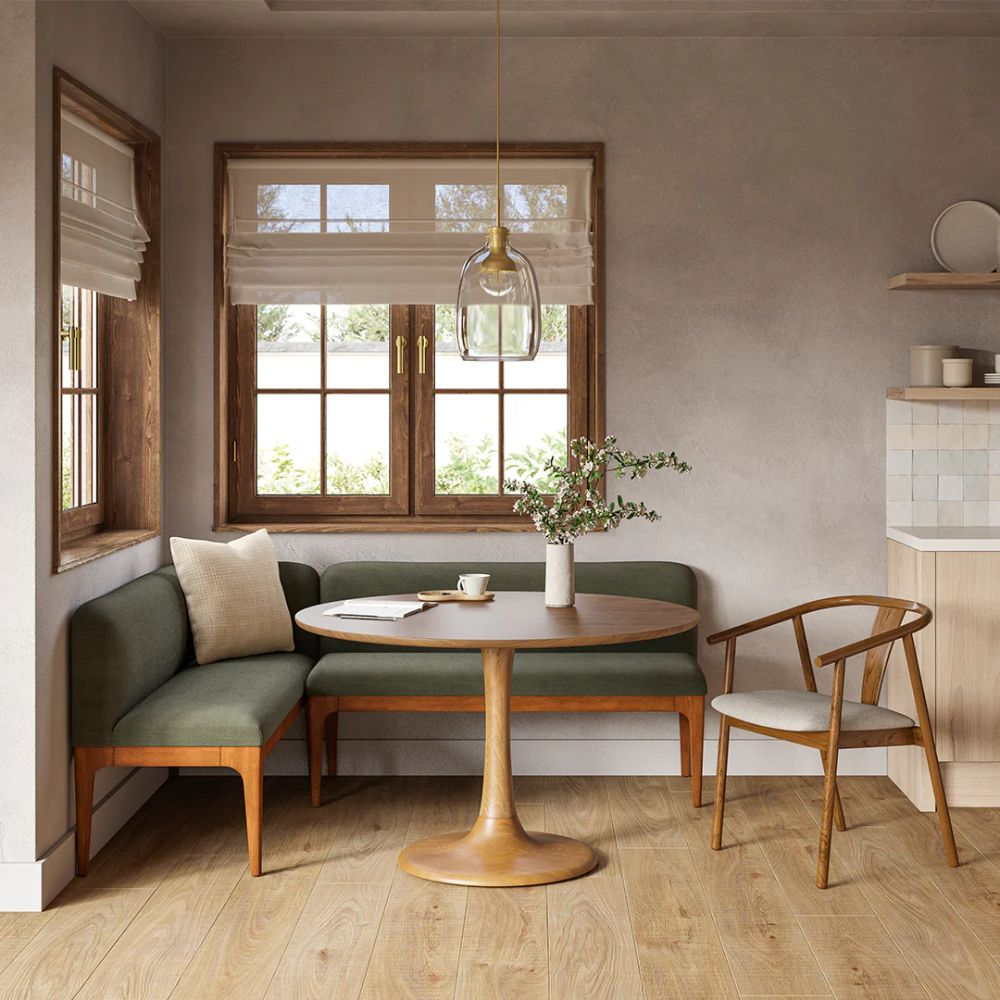
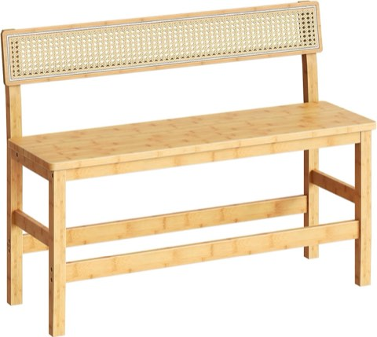
HOOBRO Dining Bench, Bamboo Farmhouse Entryway Bench with Back for Kitchen, Living Room, Bedroom, Easy to Assemble, Sturdy and Stable, Natural YL05CD01
Shop on Amazon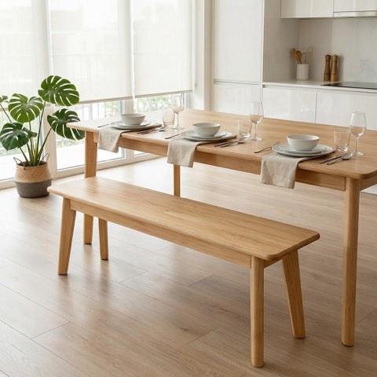
Solid Wood Farmhouse Bench 31.5"/39.4"/47.2"/55.1"/59" Skinny Bench Rustic Long Entryway Bench, Heavy Duty, Durable ＆ Easy Assembly, For Hallway, Kitchen, Bedroom, Dining(Wood,31.5"x11.8"x17.7")
Shop on Amazon9. Use a Drop-Leaf Table
A drop-leaf table gives you flexibility that a fixed table simply cannot match.
Keep the leaves down during everyday meals and raise them when friends or family come over.
This setup works especially well if your dining room doubles as a home office, homework area, or occasional workspace.
Folding furniture tends to get recommended for small homes generally, since it lets residents reclaim floor space whenever they don't actually need the piece.
For a genuinely tiny dining area, that flexibility can matter more than having a larger permanent table.
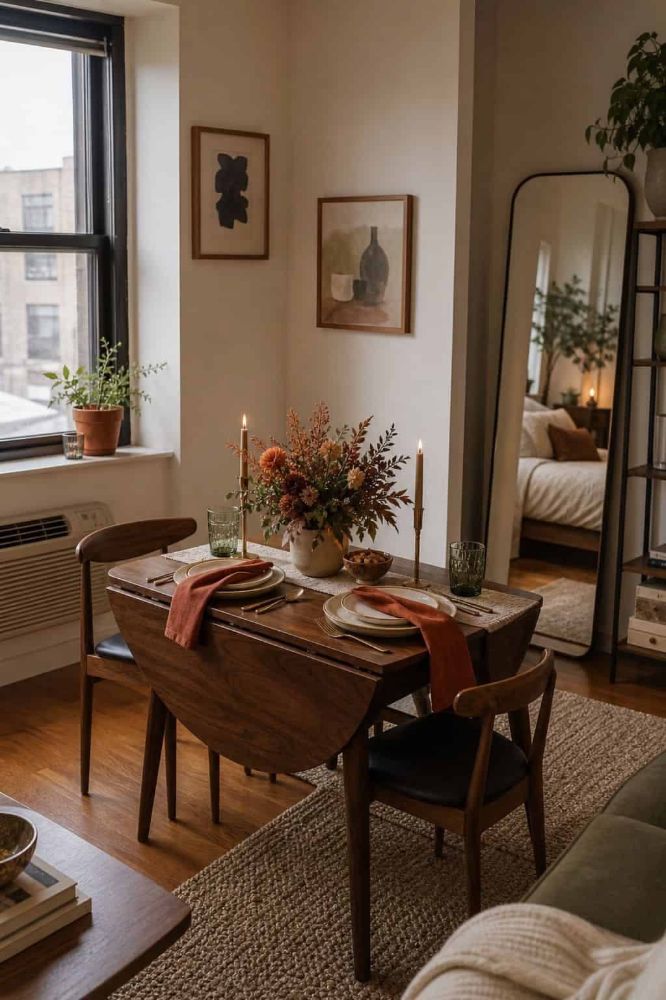
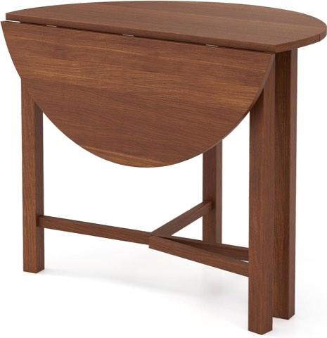
36" Folding Round Dining Table, Wooden Drop Leaf Table with for 2-4 People, Space Saving Design, Easy Assembly, Foldable Dining Table for Kitchen, Living Room, Small Spaces, Walnut
Shop on Amazon10. Try Armless Chairs in Your Small Dining Room
Armchairs look luxurious, but they can quickly consume precious space.
Armless dining chairs slide closer to the table and allow you to squeeze in an extra seat when necessary.
They also make the room feel less visually heavy.
If you love upholstered chairs, choose a slim silhouette rather than a wide barrel chair. You can still get softness without turning every seat into an armchair throne.
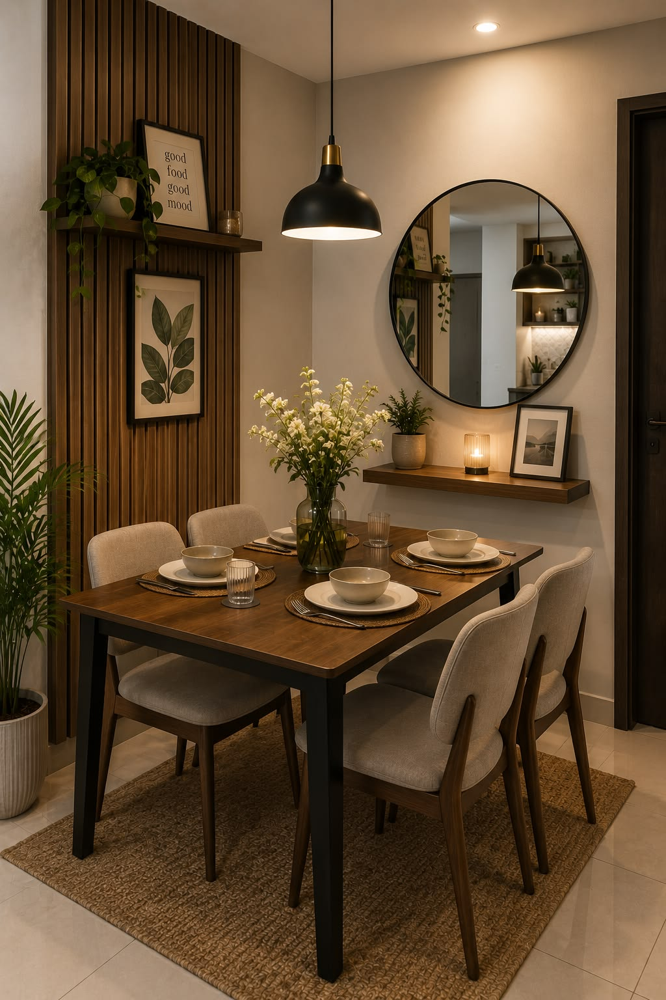
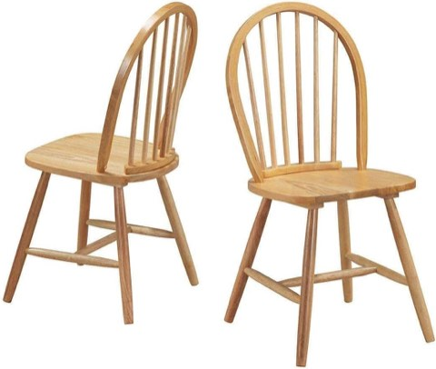
HAPPYGRILL 2 Pieces Wooden Dining Chairs Set, Vintage Armless Windsor Chairs, Kitchen Dining Chairs with Backrest, Natural
Shop on Amazon11. Choose Open-Back Dining Chairs
Bulky chairs can visually close in a small dining room.
Open-back chairs allow more of the wall and room to remain visible, which creates a lighter appearance.
I particularly like cane, spindle, wishbone, and slim metal-frame chairs for this reason.
Open-back chairs and chairs without arms tend to get recommended specifically when space feels tight.
Just make sure you don't sacrifice comfort. A beautiful chair nobody wants to sit on doesn't win many points.
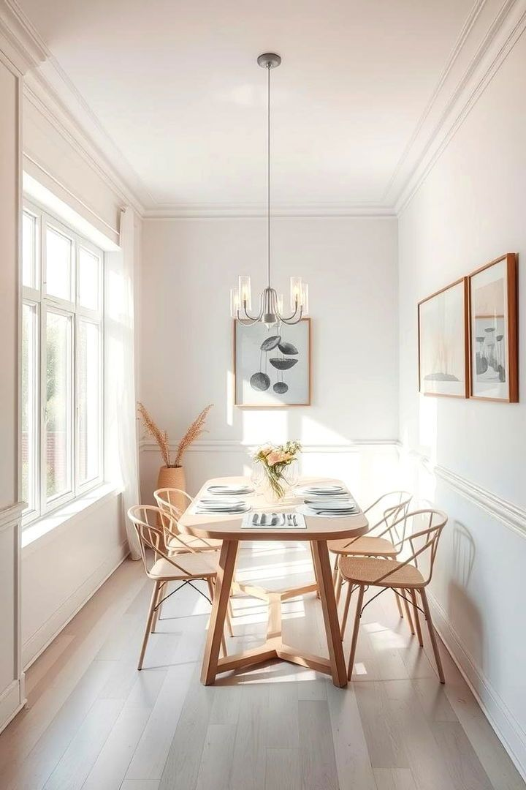
12. Add Wall Sconces to Your Small Dining Room
Wall sconces can provide another layer of lighting without taking up table or floor space.
Place them beside artwork, a mirror, or a built-in cabinet.
You can also use them to create symmetry around the dining table.
Layered lighting genuinely helps create a warmer and more inviting dining atmosphere, particularly in smaller rooms.
Choose warm bulbs and install dimmers if your wiring allows it. Bright overhead lighting has its place, but dinner under interrogation-room lighting probably isn't it.
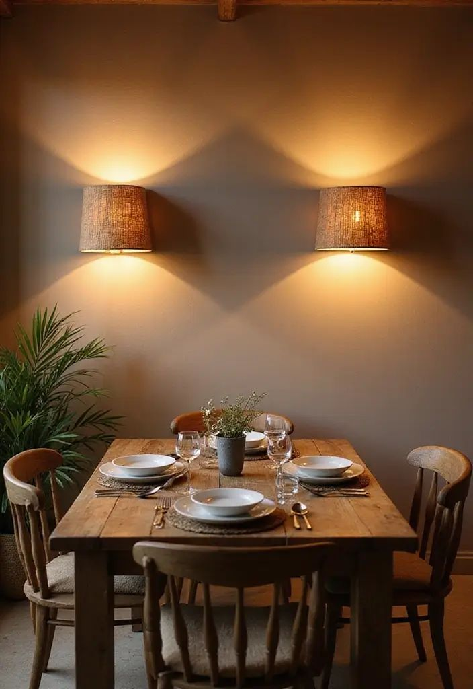
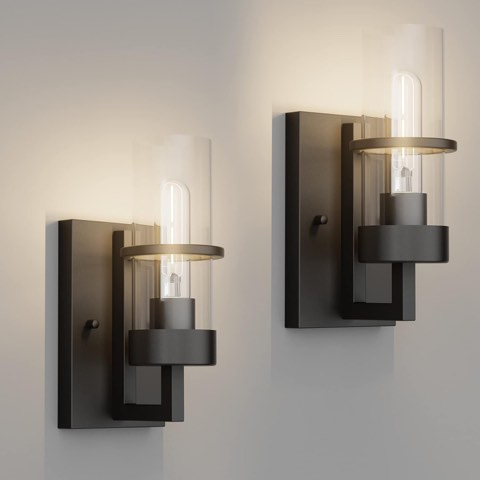
Tipace Black Hardwired Wall Sconces Set of 2,Modern Bathroom Vanity Sconces Wall Lighting with Clear Glass Shade,Farmhouse Wall Mount Lights for Mirror Bedroom Living Room Hallway Kitchen
Shop on Amazon
Antique Brass Hardwired Wall Sconce Set of 2 - Gold Finish with White Fabric Shades，Bedroom Lighting, Living Room, Farmhouse, Fireplace, Hallway, Bedside Lamp,Bathroom Wall Lights
Shop on Amazon13. Install a Pendant Above the Dining Table
Your ceiling can do some serious work in a small dining room.
Instead of adding a floor lamp that steals valuable floor space, hang a pendant or chandelier directly above the table.
The light naturally establishes the dining zone and draws the eye upward.
Ceiling fixtures and wall lights tend to get recommended as effective lighting solutions for small spaces generally, since they provide illumination without consuming any floor space.
I'd choose something visually interesting but not excessively bulky. You want a statement, not a chandelier that looks like it needs its own zip code.
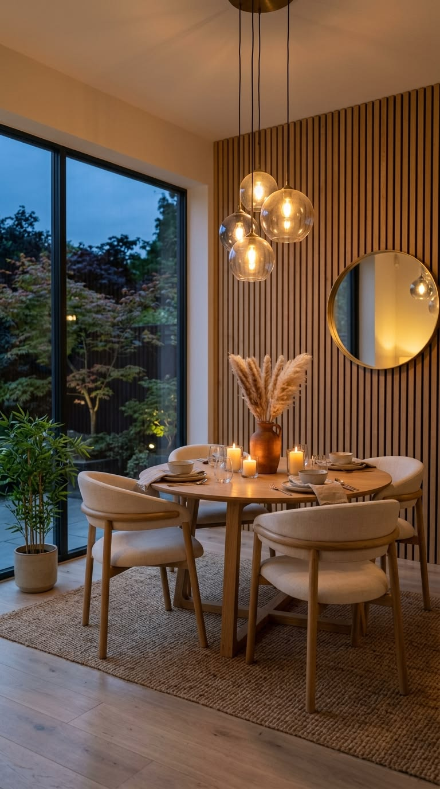
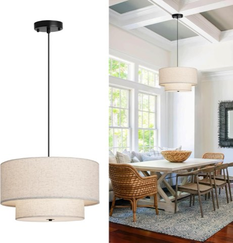
18" Modern Double Drum Fabric Pendant Light, Large Hanging Ceiling Chandelier Fixture with Dual Layer Fabric Shade, Ideal for Dining Room, Living Room, Bedroom, and Kitchen
Shop on Amazon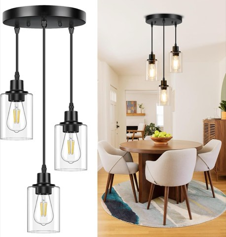
Licperron 3-Light Pendant Light Fixtures, Black Pendant Lights Kitchen Island, Adjustable Pendant Lighting with Clear Glass Shade, Modern Hanging Light Fixtures for Dining Room, Hallway, Living Room
Shop on Amazon14. Keep the Small Dining Room Color Palette Simple
If bold color feels intimidating, keep things simple.
Choose two or three main colors and repeat them throughout the space. For example, you could pair warm white walls with natural oak and soft black accents.
A restrained palette helps the eye move around the room instead of stopping at every different color.
A monochromatic or otherwise simple palette tends to get recommended specifically when the goal involves making a small dining room appear larger.
And honestly, fewer colors also make decorating much easier.
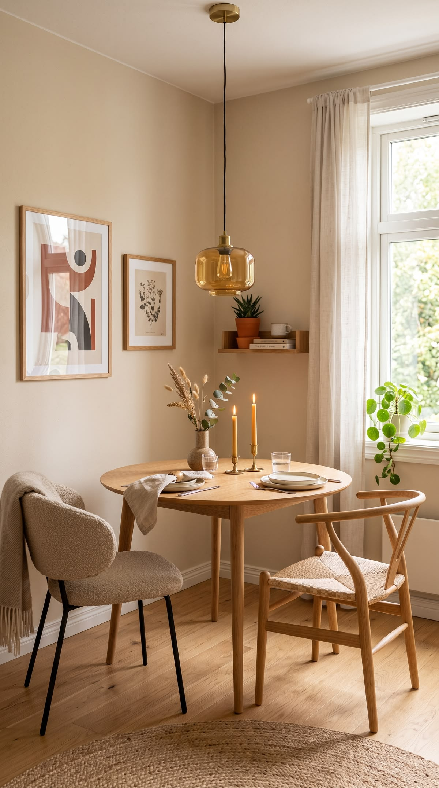

Vitalizart Beige Table Runner 14 x 72 Inches Long Slub Texture Cotton Linen Table Runner for Rustic Home Decorations Dining Room Wedding Decor Reception Bridal Shower Thanksgiving Christmas
Shop on Amazon15. Use One Strong Color Throughout the Small Dining Room
Here's where I disagree with the old "small rooms must stay white" rule.
You can absolutely use darker colors in a small dining room.
A deep olive green, warm taupe, charcoal, navy, or chocolate brown can create a cozy, enveloping atmosphere. More designers these days are challenging the old idea that small rooms need light colors to actually feel larger.
The trick involves consistency.
Paint the walls, trim, and perhaps even the ceiling in closely related tones. Instead of chopping the room into visual sections, you create one continuous envelope.
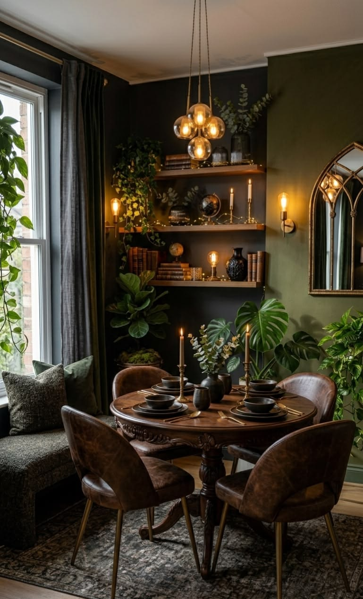
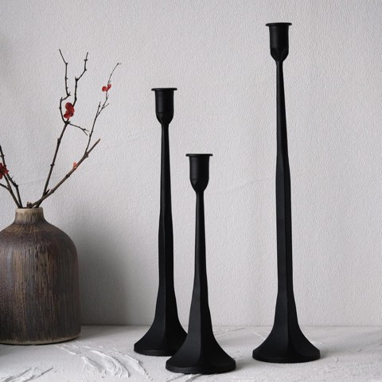
Denique Iron Taper Candle Holder Set of 3, Black Candlestick Holders Decorative Candle Stand, Tapered Candle Holders Tall Set for Wedding, Dining Table, Home Decoration (Black)
Shop on Amazon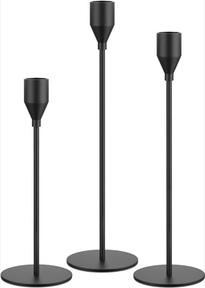
NLBTW Black Candlestick Holders, Set of 3 Tall Metal Taper Candle Holder
Shop on Amazon16. Hang a Mirror in Your Small Dining Room
Mirrors remain one of my favorite small-space decorating tricks.
Place a large mirror opposite a window or another light source and let it reflect brightness throughout the room. You can also use an oversized mirror behind the dining table to create more visual depth.
Mirrors specifically get recommended for small spaces because they reflect available light and create the illusion of additional space.
Want something more interesting than a basic rectangular mirror? Try an arched, antique, fluted, or organically shaped mirror.
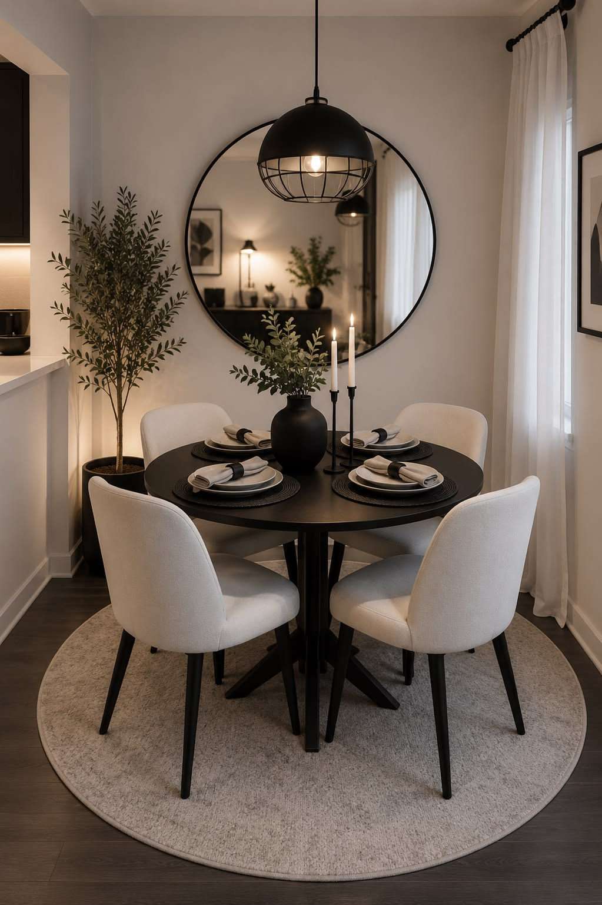
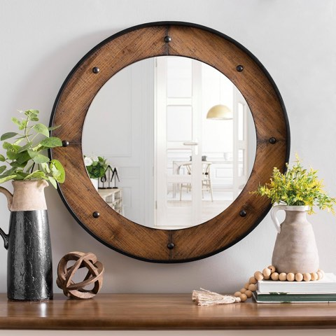
Rustic Round Wall Mirror 30 Inch, Natural Wood Frame with Black Metal Trim, Industrial Farmhouse Round Wood Mirror, Decorative Wall Mirror for Bathroom, Living Room, Entryway
Shop on Amazon17. Use a Bench Instead of Two Dining Chairs
You don't always need a built-in banquette.
A freestanding bench can give you the same basic advantage while costing considerably less and allowing more flexibility.
Push the bench completely against the wall when nobody uses it. Pull it out when guests arrive.
This little trick can make a surprisingly big difference in a narrow dining room.
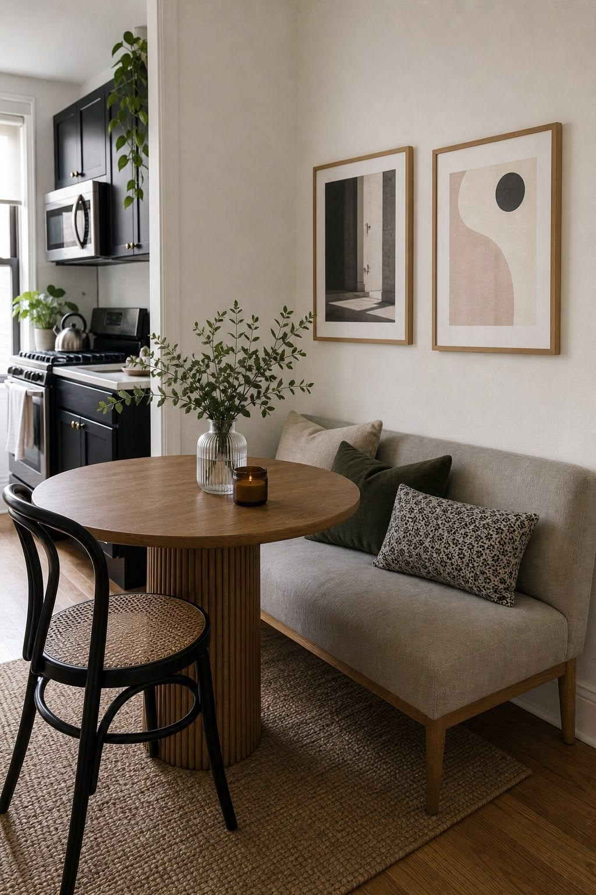
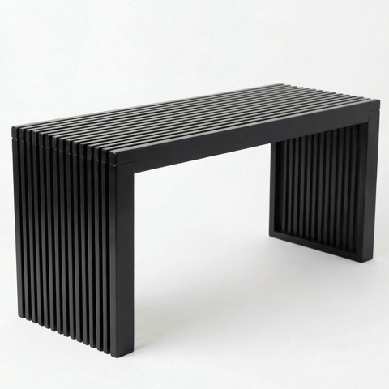
Bamboo Natural 36 inch Wooden Bench, Small Wood Benches for Entryway, Living & Dining Room, Kitchen, Bedroom, Bathroom, Hallway, Front Door, For Indoor & Outdoor Patio Use, Mid Century Modern Decor
Shop on Amazon18. Add a Built-In Banquette to Your Small Dining Room
If your dining room has an awkward corner, stop fighting it.
Turn that corner into a banquette.
A built-in bench uses wall space instead of demanding a chair on every side of the table. You can also add drawers or lift-up storage underneath.
Banquettes get highlighted a lot as a practical way to maximize seating while using otherwise difficult corners.
I especially love this approach for breakfast nooks because the bench creates a cozy little zone without making the room feel packed.
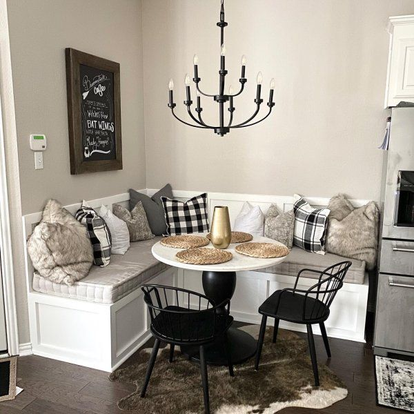
SwallowLiving Handcrafted Solid Wood Bench, 30" - Farmhouse-Style Entryway Seating for Living & Dining Room, Rustic Design, Natural Finish
Shop on AmazonWood Bench Indoor Farmhouse Skinny Entryway Bench Hallway Foyer with Sturdy
Shop on Amazon19. Choose a Round Table for Your Small Dining Room
A round table can transform a cramped dining area.
Without sharp corners, you can move around the table more easily. A pedestal base also gives everyone more legroom because nobody has to fight with a table leg.
I particularly like round tables in square dining rooms because the curves soften all those straight architectural lines.
Try a 36 to 42 inch round table for a compact space, depending on your household and circulation needs.
23.62" Small Round Dining Table for 2 – Durable & Well-Made Tulip Table with Sturdy Metal Frame, Compact 2-Seater Kitchen or Dining Room Table for Small Spaces, Apartments, Café, Restaurant, Office
Shop on AmazonRound Dining Table White with Pedestal Base,31.5" Modern Tulip Dining Room Table for 1-4 People,Pedestal Dining Table with Round Top for Kitchen Living Room (Tulip Dining Table White)
Shop on AmazonWhat Furniture Works Best in a Small Dining Room?
The best furniture for a small dining room usually has a compact footprint, clean lines, and more than one job.
A round pedestal table works particularly well because you can move around it without dealing with four table legs. A bench can tuck against a wall, while folding or extendable tables can give you extra seating when guests arrive.
Round tables, pedestal bases, benches, open-back chairs, and built-in seating all tend to get recommended as useful strategies for compact dining spaces generally.
For me, the biggest mistake involves buying miniature furniture simply because the room feels small. Tiny furniture can actually make the room feel awkward. Choose furniture that fits the room, not furniture that looks like dollhouse furniture.
Now let's get into the ideas.
Round Dining Table 27.5" Circle Tulip Table for 4 People,Oak
Shop on Amazon30 Inch Round Dining Table, Modern Tulip Bistro Table with White Faux Marble Top and Weighted Gold Pedestal Base, Small Kitchen Table for 2-4 People, Mid Century Style for Dining Room, Cafe, Office
Shop on AmazonHow Do You Make a Small Dining Room Feel Bigger?
Start with the layout rather than the decorations. I know it feels more exciting to shop for pendant lights and pretty artwork, but the wrong table can ruin everything else you do.
Look at the shape of the room first. A narrow dining room often works better with a rectangular or oval table, while a square room can handle a round table beautifully.
You also need enough room to move around the table. It's worth choosing a table shape that actually works with the room's shape and leaves enough circulation space once the chairs get pulled out.
I always recommend asking yourself one simple question before buying anything: can I comfortably pull out every chair without bumping into a wall, cabinet, or another person?
If the answer is no, keep shopping.

Chende Gold Mirrors for Decor, 32'' Round Wall Mirror with Beveled Glass Frame, Modern Decorative Mirror with Wood Frame for Living Room, Entryway, Dining Room, Bathroom
Shop on AmazonChende Round Decorative Mirror for Wall Decor, 39" x 39" Large Living Room Mirror with Removable Metal Leaves for Entryway, Home Office, Bedroom,Farmhouse
Shop on AmazonFinal Thoughts on Small Dining Room Ideas
The best small dining room ideas don't rely on expensive furniture or complicated renovations. They rely on understanding how people move through a room.
Choose the right table. Keep the circulation clear. Use the walls intelligently. Bring in layered lighting. Add a mirror when the room needs more visual depth, and don't be afraid of color just because the square footage looks intimidating.
Most importantly, design the dining room for the way you actually live.
Maybe you host Sunday dinners. Maybe you eat takeout at the table while watching television. Maybe the dining table doubles as your laptop desk six days a week.
Design for that actual reality.
Because a small dining room doesn't need to look bigger than it really is. It just needs to work beautifully for the people who use it.
And if you can accomplish all of that while still having enough room to actually pull your chair out without performing a complicated yoga pose, I'd call that a genuine decorating win.